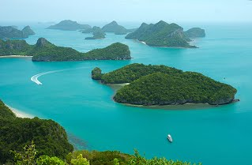
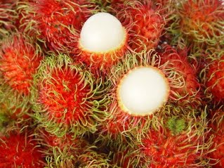
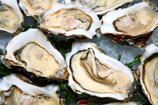
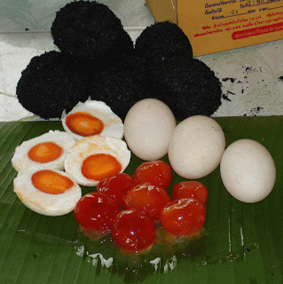
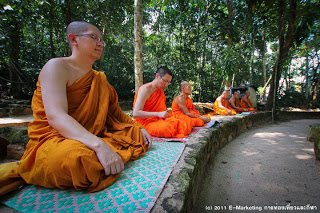

คำขวัญประจำจังหวัด
เมืองร้อยเกาะ เงาะอร่อย หอยใหญ่ ไข่แดง แหล่งธรรมะ

เมืองร้อยเกาะ ชื่อนี้มาจากสภาพพื้นที่ส่วนหนึ่งของจังหวัดสุราษฎร์ธานี
ประกอบด้วยหมู่เกาะใหญ่น้อยมากมาย เช่น
เกาะสมุย เกาะพะวัน เกาะเต่า เกาะริกัน เกาะหลัก เกาะนก เกาะกล้วย เกาะพลวย เกาะปราบ เกาะแตน เป็นต้น
ซึ่งเกาะเหล่านี้ส่วนหนึ่งได้ถูกกำหนดและประกาศให้เป็นเขตอุทยานแห่งชาติ
เรียกว่า อุทยานแห่งชาติหมู่เกาะอ่างทอง ซึ่งประกอบด้วยเกาะใหญ่น้อยหลายสิบเกาะ มีเนื้อที่ประมาณ 156,250
ไร่
หมู่เกาะต่างๆ ของจังหวัดสุราษฎร์ธานีเป็นแหล่งท่องเที่ยวที่สวยงาม
และมีชื่อเสียงทั่วโลกทำให้นักท่องเที่ยวทุกมุมโลกหลั่งไหลสู่หมู่เกาะเหล่านี้ปีละหลายแสนคน
ทำให้จังหวัดสุราษฎร์ธานีเป็นแหล่งท่องเที่ยวที่สำคัญจังหวัดหนึ่งของประเทศไทย

เงาะอร่อย เงาะโรงเรียน เป็นเงาะที่มีรสชาติอร่อย เนื้อกรอบ หวานหอม
และมีปลูกกันมากอย่างเป็นล่ำเป็นสัน
และมีชื่อเสียงเป็นที่นิยมของผู้บริโภค ก็คือ อำเภอบ้านนาสาร ซึ่งเป็นถิ่นกำเนิดของชื่อเงาะโรงเรียน
เงาะโรงเรียนมีประวัติเล่าว่า เมื่อปี พ.ศ. 2468 มีชาวจีนสัญชาติมาเลเซีย ชื่อนายเค วอง
มีภูมิลำเนาอยู่ที่เมืองปินังประเทศมาเลเซีย ได้เดินทางเข้ามาทำเหมืองแร่ดีบุก ที่หมู่บ้านเหมืองแกะ
ตำบลนาสาร
อำเภอบ้านนาสาร โดยสร้างบ้านพักเป็นเรือนไม้ 2 ชั้น ในที่ดินที่ซื้อจำนวน 18 ไร่ ใกล้ทางรถไฟด้านทิศตะวันตก
ได้นำเมล็ดเงาะมาปลูกข้างบ้านพัก ปรากฏว่ามีเงาะต้นหนึ่งมีผลที่มีลักษณะต่างไปจากต้นอื่น คือ
รูปผลค่อนข้างกลมเนื้อกรอบ หวาน หอม เปลือกบางรสชาติอร่อย เมื่อนายเค วอง เลิกสัมกิจการเหมืองแร่ในปี
พ.ศ.2497
ได้ขายที่ดินจำนวน 18 ไร่ พร้อมบ้านดังกล่าว ให้่กระทรวงธรรมการ (กระทรวงศึกษาธิการ)
ซึ่งได้ปรับปรุงใช้เป็นสถานที่เรียน เรียกว่า โรงเรียนนาสาร เงาะที่นาย เควอง ปลูกไว้ ก็
ได้ขยายพันธุ์ประชาชนใช้ต้นพันธุ์เดิม จึงเรียกว่า เงาะโรงเรียน

หอยใหญ่ หมายถึง หอยนางรมซึ่งหอยนางรมสุราษฎร์ธานี ีเป็นที่รู้จักอย่างแพร่หลาย
ในหมู่นักบริโภค
ว่าเป็นอาหารทะเลที่ขึ้นชื่อ มีรสชาติอร่อย ชวนรับประทาน
การเพาะเลี้ยงหอยนางรมในจังหวัดสุราษฎร์ธานี เริ่มประมาณปี พ.ศ. 2504 ทดลองเลี้ยงที่แหลมซุย อำเภอไชยา
ต่อมาได้นำมาเพาะเลี้ยงที่บริเวณปากคลองท่าทอง และปากคลองกะแดะ อำเภอกาญจนดิษฐ์
หอยนางรมมี 2 ชนิด คือ ชนิดพันธุ์เล็ก เรียกว่า หอยเจาะ ชนิดพันธุ์ใหญ่ เรียกว่า หอยตะโกรม ลักษณะเป็นหอย 2
ฝา
พบทั่วไปบริเวณน้ำตื้นชายฝั่ง หอยนางรมจะวางไข่ตลอดปี แต่จะพบมาในระหว่างเดือนกุมภาพันธ์ ถึงเดือนเมษายน
และวางไข่ครั้งหนึ่งประมาณ 1-9 ล้านฟอง

ไข่แดง เป็นนามเรียกลักษณะของไข่เค็มไชยาซึ่งเป็นไข่เค็มที่มีชื่อเสียงกล่าวขวัญกันทั่วไป
เพราะไข่เค็มไชยาเป็นไข่เค็มที่ทำจากไข่เป็ดที่เลี้ยงในเขตอำเภอไชยา มีลักษณะพิเศษ คือไข่แดงมีสีแดงจัด
ไข่แดงมีมากกว่าไข่ทั่วไป สีสันมันวาว ชวนรับประทาน ไข่เค็มไชยา
มีการจัดทำอย่างเป็นล่ำเป็นสันที่อำเภอไชยาเป็นสินค้าซึ่งถือเป็นเอกลักษณ์อย่างหนึ่งไชยา
และชาวสุราษฎร์ธานีมีจำหน่าย ในจังหวัดสุราษฎร์ธานีโดยเฉพาะที่อำเภอไชยา

แหล่งธรรมะ สุราษฎร์ธานี มีความรุ่งเรืองทางพุทธศาสนาตั้งแต่อดีตเห็นได้จากร่องรอย
ความเจริญที่ยังคงปรากฎให้เห็นอยู่ทั่งไป เช่น วัดพระบรมธาตุไชยาราชวรวิหาร วัดแก้ว วัดหลง อำเภอไชยา
วัดเวียง
อำเภอเวียงสระ วัดถ้ำสิงขร อำเภอคีรีรัฐนิคม วัดเขาพระอานนท์และวัดเขาศรีวิชัย อำเภอพุนพิน
และอีกหลายแห่งแหล่งธรรมะที่ชาวจังหวัดสุราษฎร์ธานี ภาคภูมิใจ
เป็นที่ศรัทธาเลื่อมใสของชาวพุทธทั้งไทยและต่างประทศ ที่มาเยือนมากมาย ตลอดปี
สวนโมกข์พลาราม หรือ วัดธารน้ำไหล เรียกสั้นๆ ว่า "สวนโมกข์"
ท่านพุทธทาสได้สร้างสวนโมกข์ขึ้น เมื่อปี พ.ศ. 2502 มีเนื้อที่375 ไร่
เป็นวัดที่แปลกไม่มีสิ่งก่อสร้างเป็นโบสถ์วิหารแต่จะใช้ธรรรมชาติอันร่มรื่นด้วยแมกไม้นานาพันธุ์ทำให้ได้ใกล้ชิดธรรมชาติ
ศึกษาธรรมะ วิปัสสนาตามธรรมชาติ ที่นี่ มีโรงมหรสพทางวิญญาณลานหินโค้ง
โรงปั้นสระน้ำซึ่งทุกแห่งของสวนโมกข์สามารถศึกษาธรรมะได้อย่างเข้าใจถึงแก่นแท้ของพุทธศาสนาสวนโมกข์
เป็นแหล่งที่เผยแพร่พระพุทธศาสนาที่สำคัญ แห่งหนึ่งของไทย
ทั่วโลกยอมรับและยกย่องท่านพุทธทาสว่าเป็นบุคคลสำคัญของโลก